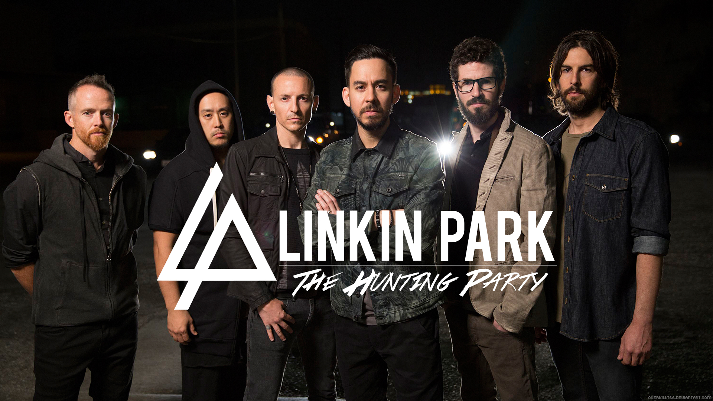

Linkin Park
Linkin Park — американская рок-группа, основанная в 1996 году под названием Xero и исполняющая музыку преимущественно в стилях альтернативный метал, ню-метал и рэп-метал (раннее творчество), альтернативный рок, электроник-рок, поп и поп-рок (позднее творчество). Существуя с 2000 года под названием Linkin Park, группа была шесть раз номинирована и два раза удостоилась награды «Грэмми». Группа обрела успех благодаря дебютному альбому 2000 года под названием Hybrid Theory, проданному тиражом более чем в 30 миллионов экземпляров (в 2010 году он обрёл «бриллиантовый» статус, присуждаемый RIAA). Следующий студийный альбом, Meteora, повторил, хоть и не превзошёл успеха предыдущего, лидируя в 2003 году в чарте Billboard 200. В общей сложности группа выпустила семь студийных альбомов, которые разошлись общим тиражом около 100 миллионов экземпляров.
Linkin Park взяли паузу после того, как 20 июля 2017 года вокалист Честер Беннингтон совершил самоубийство через повешение. 28 апреля 2020 года басист Дэйв Фаррелл сообщил, что группа работает над новой музыкой. Однако в апреле 2022 года Шинода сообщил, что группа не работает над новой музыкой и не планирует гастролировать в обозримом будущем. 9 октября 2020 года вышло юбилейное издание Hybrid Theory в честь 20-летия альбома.
Популярные песни:
Numb
In the End
Faint
What I've Done
From the Inside